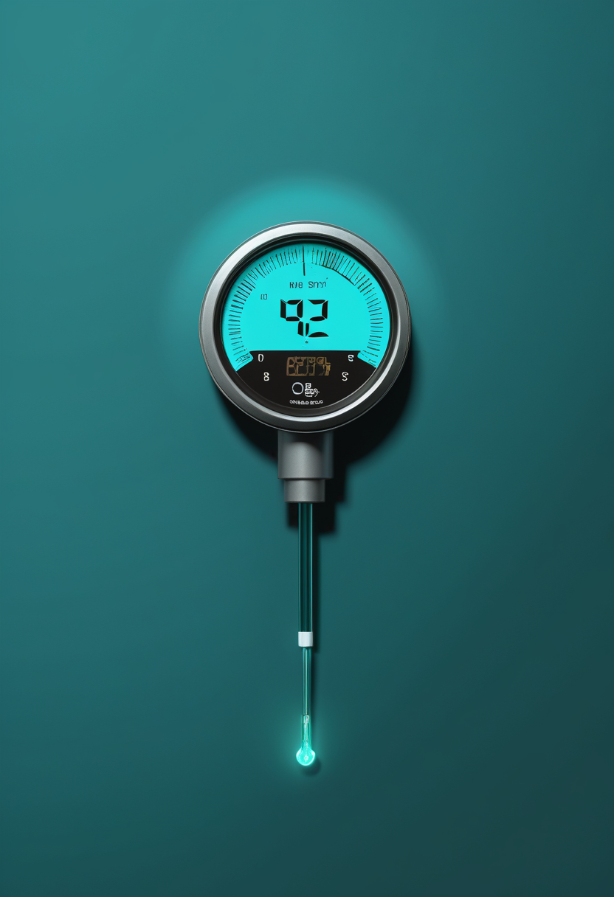
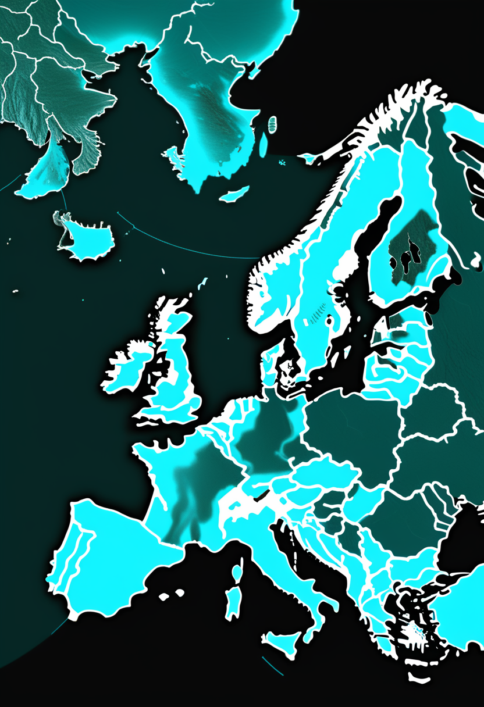
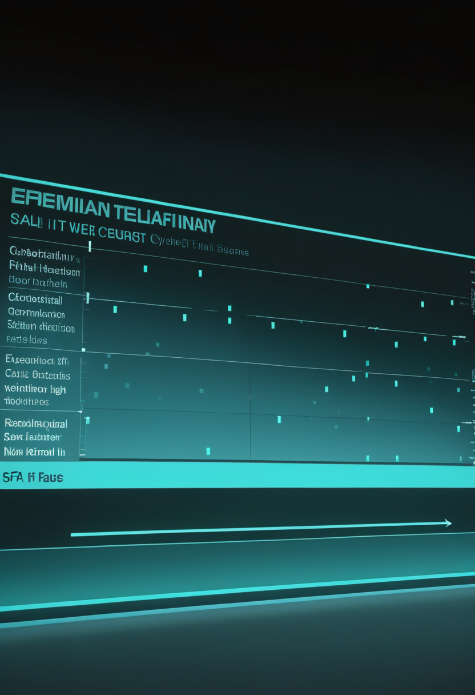
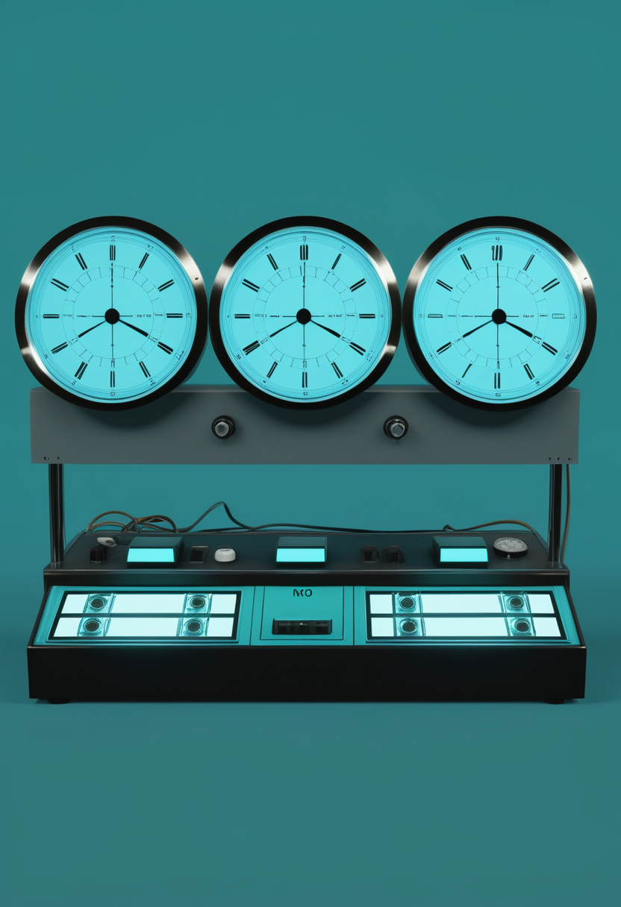

月曜日の便り。前号は「明日、嫦娥7号が飛ぶ」と書いたが、8月23日、新華社は打ち上げ条件を満たさず今年の窓では実施できないと伝えた。理由は明示されていないが、文昌近くに停滞した熱帯低気圧の影響を指摘する報道が複数ある。SpaceNewsは中国側が国際パートナーに「9月へ」と説明したと報じており、新日程はまだ発表されていない。命の章では、アピテグロマブの製造委託先がFDA査察で「要措置」に分類され、Scholar Rockが第2施設のみで審査を続ける決断をしたことと、サラナーセンが年1回投与で第3相へ進んだことを伝える。自由の章では、血管留置型で10分の埋込みを競う中国勢と、Paradromicsが初のヒト埋込みを終え「臨床段階の会社になった」と語ったことが並んだ。基盤の章では、エボラの生数字自体は週末で止まったままだが、北キブ州の致死率がイトゥリの約1.5倍という州ごとの差が見え、欧州の西ナイル熱は21地域が初めての夏を迎え、米国の麻疹は排除認定の判定が11月に持ち越された。美の章では、カリフォルニアが職場の脳データ収集規制に動き、AIの心をめぐる議論とデジタルツインの尊厳論が、答えの出る前に枠組みを作るという同じ姿勢を見せた。
8/23号の続報 ― 本紙前号は「明日、嫦娥7号が飛ぶ」と書いた。日本時間の本日9時、海南島・文昌から長征5号が上がるはずだった。だが8月23日、新華社は嫦娥7号が打ち上げ条件を満たさず、今年の予定していた窓では実施できないと伝えた。中国側は理由を明示していないが、複数の報道は文昌の近く、北部湾(トンキン湾)に停滞した熱帯低気圧「紫檀(ナラ)」を挙げている。一方SpaceNewsは、中国側が国際パートナーに対し「少なくとも1カ月の延期、9月へ」と説明したと報じた。二つの表現には開きがあり、新しい日程は本稿執筆時点で発表されていない。周回機・着陸機・探査車・跳躍機の四点セットで月南極の水氷を探す、この十年で最も野心的な月ミッションは、いったん地上で待つことになった。
本日から数えて37日後の9月30日、FDAはアピテグロマブの可否を決める。有効性の議論はすでにほぼ終わっている ― 第3相SAPPHIRE試験の結果はLancet Neurologyに載った。残っていたのは製造だった。Scholar Rockは8月7日、充填・仕上げを委託していたCatalent Indiana社から、同社の2026年4月の査察がFDAにより「要措置(OAI)」と分類されたとの通知を受けたと発表した。同社の対応は速かった。Catalent Indianaを申請から外し、第2の充填施設のみで審査を続ける形に切り替えたのである。承認されればその施設から潤沢な商用バイアルを供給できるとしており、欧州医薬品庁(EMA)に対しても、同じ第2施設を販売承認申請に加える手続きを協議している。昨年の見送りが製造上の問題だったことを思えば、この一手は前回の轍を踏まない備えである。
ヌシネルセンやリスジプラムで治療を始めた子どもに、あとから遺伝子治療(オナセムノゲン アベパルボベク)を重ねるとどうなるか。単施設の後ろ向き研究が、40人分の答えを出した。年齢中央値18カ月(5〜107カ月)、38人がヌシネルセン、2人がリスジプラムからの切り替えである。投与6カ月後、CHOP-INTENDの中央値は27から37へ、HFMSEは30から36へ上がった(いずれもp<0.0001)。臨床的に意味のある改善に達した割合は1カ月で67.5%、6カ月では95.0%に届いている。ただし代償も明確だった。肝機能障害はほぼ全例で生じ、投与後5〜7日にピークを迎えて、副腎皮質ステロイドの長期化・増量を要することが多い。血小板減少は32.5%(血栓性微小血管症は認めず)。年長で体重のある子ほどベクター用量が増えるという構造的な問題は、依然として残っている。

本紙前号はサラナーセンを「遺伝子治療のあとを引き継ぐ薬」として紹介した。その後の続報として、開発段階が具体化している。第1相の中間結果では、神経細胞の傷害を映す血中バイオマーカーであるニューロフィラメント軽鎖(NfL)が約70%低下し、1年に1回という投与間隔のもとでWHOの運動マイルストーンの達成が見られた。これを受けてBiogenは登録試験へ進む判断を下し、現在は80mgを年1回投与する設計で、幅広い病型を対象とした3つの国際第3相が走っている。FDAからは画期的治療薬指定(BTD)も得た。仕組みはアンチセンスオリゴヌクレオチドで、SMN2遺伝子由来のmRNAに結合し、完全長で機能するSMNタンパク質の産生を増やす。年1回という頻度は、髄腔内投与を年に何度も受ける負担を考えれば、それ自体が臨床的な価値である。
今号のSMAは、三本とも「二番手以降の薬」の話である。切り替え、上乗せ、そして筋肉側からの補強。最初の一手が遺伝子治療でもSMN2修飾薬でも、そこで止まった時計をどう動かし続けるかへ関心が移った。40人の研究が示した肝毒性ほぼ全例という数字は、その重ね方に順序と用量の設計が要ることを冷静に告げている。
埋込み型BCIの常識は「開頭手術」だった。中国のスタートアップ群はそこを外しにかかっている。South China Morning Postによれば、複数の企業と研究チームが、数分で留置できるBCIの実用化を競っている。方式は血管留置型 ― ステントのように静脈から送り込み、血管の内側から脳の信号を拾う。開頭を伴わないため、手技は10分程度で済むという。北京政府が国産勢の育成を後押ししており、狙いは明らかにNeuralinkである。技術的な新規性そのものより、「どれだけ多くの病院で、どれだけ短い手術枠で実施できるか」を勝負どころに設定したところに、この競争の性格がよく出ている。
電極の数で押す陣営もいる。Paradromicsは6月17日、FDAが承認したConnect-One早期実現可能性試験で、Connexusの初のヒト埋込みを完了したと発表した。実施はミシガン大学ヘルスで、執刀はMatthew Willsey医師。参加者は運動ニューロン疾患のために発話が困難なミシガン州の女性である。構造は三段構えで、高密度の微小電極アレイが脳から信号を取り、胸部に置いた小型のトランシーバーへ送り、そこから皮膚を通して体外の受信機へ無線で飛ばす。CEOのMatt Angle氏は「この手術はParadromicsにとって決定的な転換点だ。我々はいま臨床段階の会社になった」と述べ、今後数カ月で複数の手術を予定していると説明した。
Frontiers in Neuroscienceへ掲載された総説は、この分野の現在地を一枚の地図にまとめている。脳深部刺激(DBS)、BCI、発話ニューロプロステーシス ― 出自も目的も異なる三つの技術系統が、いま揃って概念実証の段階を抜け、初期の臨床導入へ移りつつあるという整理だ。装置の種類ではなく成熟段階で切り分けた点が読みどころで、そう並べ替えると、残る課題が共通していることが見えてくる。長期の生体適合性、信号品質の経時的な劣化、そして誰が費用を負担するかである。上の二本 ― 中国の手軽さ競争とParadromicsの高密度電極 ― は、この同じ地図の上で別の道を選んでいる。
侵襲性と情報量は交換関係にある。血管留置型は手軽さを取って電極数を諦め、Connexusは電極数を取って外科の負担を引き受けた。どちらが正しいかは、患者が何を取り戻したいかで変わる。カーソルを動かすだけなら前者で足りるが、失われた声を音として再現するには後者の帯域が要る。市場が一つに収束しない理由がここにある。
ECDCの日次集計は8月20日時点のまま更新が止まっている。コンゴ民主共和国の確定例5,290、死亡2,516。数字が動かない週末のうちに、内訳を見ておきたい。最大の震源イトゥリ州は4,447例・1,984人死亡、36ある保健区のうち28区に広がった。目を引くのは北キブ州である。663例に対して452人が死亡しており、報告ベースの致死率は約68% ― イトゥリの約45%を大きく上回る。診断網が届かず、重症例だけが拾われている可能性が高い。影響を受けた保健区は6州で151区中56区、本紙前号が伝えたWHO週報(8月16日時点)の55区から一つ増えた。隔離入院中は837人、回復は1,152人、接触者の82.9%が追跡下にある。ワクチンは8月20日に7万回分の放出が決まったところで、うち2万回分はBundibugyo型への交差防御を確かめる第3相試験に充てられる。

ECDCの8月21日時点の集計で、欧州の域内感染による西ナイル熱は12カ国625例に達した。内訳はイタリア311、ギリシャ157、スペイン63、北マケドニア37、ルーマニア28、フランス17、セルビア6、オランダ2、アルバニア・オーストリア・ドイツ・コソボが各1。死亡は12人で、ギリシャ6、イタリア5、ルーマニア1である。数の多さより注目したいのは地理だ。報告のあった地域は99にのぼり、そのうち21地域は史上初めての症例だった。前年同期は9カ国67地域だったから、蚊が卵を産み、ウイルスが越冬できる場所そのものが北へ、内陸へと動いていることになる。オランダとドイツで各1例が出たという事実は、その移動の先端を示している。

米CDCの8月20日時点の集計で、2026年の確定麻疹は2,777例。2025年の通年2,289例をすでに上回っている。米国は2000年に麻疹の「排除状態」を認定されたが、これは病気がゼロという意味ではなく、同一系統の国内伝播が12カ月を超えて続いていないという監視上の呼称である。判定するのは汎米保健機構(PAHO)の地域検証委員会で、当初は2026年4月13日に予定されていた審査が11月の定例会合へ移された。焦点は遺伝子配列の解析にある ― 各地の流行が別々の輸入例から始まったのか、それとも同じ鎖が一年以上つながっているのか。前号で触れた通り、学校の新学期はもう始まっている。
三つの話に共通するのは「地図が変わっている」ことだ。エボラは州ごとに致死率が二割以上違い、西ナイル熱は21の地域で初めての夏を迎え、麻疹は排除の線引きそのものが問われている。監視の網の目が細かいところでは数字が正確になり、粗いところでは致死率が跳ね上がる。北キブの68%は、ウイルスの性質というより医療の届き方を測る数字である。
本紙前号は「明日、嫦娥7号が飛ぶ」と書いた。日本時間の本日9時、海南島・文昌から長征5号が上がるはずだった。だが8月23日、新華社は嫦娥7号が打ち上げ条件を満たさず、今年の予定していた窓では実施できないと伝えた。中国側は具体的な理由を示していないが、複数の報道は文昌の近く、北部湾に停滞した熱帯低気圧「紫檀(ナラ)」の影響を挙げている。一方SpaceNewsは、中国側が国際パートナーに「少なくとも1カ月の延期、9月へ」と説明したと報じた。「今年の窓では無理」と「9月へ」では含意がかなり違う ― 前者は年内の断念とも読めるし、8月の窓だけを指しているとも読める。新日程は未発表であり、判断は保留したい(要確認)。ミッションの構成そのものに変更はない。周回機、着陸機、探査車、そして水分子と水素同位体を分析する跳躍機の四点セットで、国際搭載6件を含む21の科学ペイロードを運び、月南極シャクルトンクレーターの縁付近を目指す。
遠い銀河の重さは、光の量から逆算する。だからその見積もりは、どんな星がどんな比率で混ざっているかという仮定に丸ごと依存している。ライデン大学が率いる国際チームは、8月18日付のNature Astronomyで、その仮定が初期宇宙では成り立っていなかったと報告した。対象は、星形成の最盛期をすでに終えた9つの巨大銀河。JWSTの非常に深いスペクトルを、以前のVLT(超大型望遠鏡)の観測と組み合わせて解析したところ、暗くて小さい低質量星が予想よりはるかに多く含まれていた ― いわゆる「ボトムヘビーな初期質量関数」である。光をほとんど出さない星が大量に隠れていた分、質量は従来推定の3〜4倍になる。筆頭著者はChloe Cheng。困ったことに、これは難問を難しくする方向に働く。ビッグバンから間もない時期に、なぜこれほど巨大で成熟した銀河が出来上がっていたのか。おまけに、低質量星の周りの惑星が初期宇宙にありふれていた可能性まで出てきた。
打ち上がらなかったロケットと、測り直された銀河の重さ。どちらも「これまで正しいと思っていた数字が、実は違っていた」という話である。嫦娥7号の遅延は熱帯低気圧という単純な理由で説明できるが、初期銀河の質量が3〜4倍というずれは、観測の仮定そのものを問い直させる。宇宙を急がず、測り直す一日だった。
議論の舞台が、研究室から職場へ移った。カリフォルニア州議会では2本の法案が最終盤にある。一つはイングルウッド選出のIsaac Bryan下院議員が提出したもので、雇用主による脳データの収集そのものを禁じる。もう一つは州の既存プライバシー法を拡張し、神経データの販売を禁じる内容だ。いずれも下院を通過し、上院でも大半の手続きを終えた(法案番号は本紙では未確認)。反対しているのは大手雇用主、地方自治体、そして病院・食料品店・高齢者介護施設の業界団体から成る連合で、「網を広く掛けすぎており、安全運転の促進や盗難の検知、接客時の不適切行動への対処に使われている既存のツールまで巻き込む」と主張している。神経データを名指しで保護する州法をもつのは、コロラド、カリフォルニア、モンタナ、コネチカットの4州。コネチカットの改正は2026年7月1日に施行された。

この問いは、はいかいいえで答えようとすると必ず行き詰まる。Frontiers in Psychologyに載った論考は、そこで前提を組み替えた。まず語をほどく ― 感覚(sentience)、意識、自己モデル化、メタ認知、行為主体性、道徳的被行為者性、そしてAI福祉。これらは同じことの言い換えではない。そのうえで各領域について、二者択一の判定ではなく順序尺度の「証拠水準」を設ける。行動的な証拠、アーキテクチャ由来の証拠、因果機構的な証拠、身体性に関わる証拠、福祉に直結する証拠を別々に重みづけし、対象ごとの証拠プロファイルを作る。抽象論で終わらせないために、具体的な比較例と、介護ロボットを想定した実施手順まで用意されている。
Bioethics誌(第40巻491〜498頁)に載ったA. J. Barnhartの論考は、医療デジタルツインをめぐる議論に別の軸を持ち込む。患者の個人データと機械学習から作られる仮想の身体は、転帰の予測や治療方針の判断に使われはじめている。しかし患者の側は、医療体験の中心に尊厳を置いている。設計にその原則が入っていなければ、自律性は損なわれ、機微なデータは目的外に流れ、医師と患者の信頼は削られる。論文の核心はこう言い換えられる ― デジタルツインは単なるデータ集合でも予測装置でもなく、それが表す人の尊厳の象徴的な延長である。統治の側からも同種の作業が進んでおり、6月にarXivへ出た論考は、認知デジタルツインを権限・自律・アクセスと制御・説明責任・可用性の5つの軸(5A)で管理する枠組みを提案している。
本紙が前号で書いた「答えが出る前に枠組みを作る」順序は、今号でさらに具体化した。カリフォルニアは脳データを職場から遠ざけ、Frontiersは意識の有無を段階で測ろうとし、Bioethicsは複製を尊厳の延長とみなす。三つとも「本人が同意していない使われ方」を止めにかかっている点で同じ方向を向いている。
本紙前号は「明日、嫦娥7号が飛ぶ」と書いたが、8月23日、新華社は打ち上げ条件を満たさず今年の窓では実施できないと伝えた。文昌近くに停滞した熱帯低気圧の影響を指摘する報道がある一方、SpaceNewsは中国側が国際パートナーに「9月へ」と説明したと報じており、新日程はまだ発表されていない。命の章では、アピテグロマブの製造委託先がFDA査察で「要措置」に分類されたためScholar Rockが第2施設のみで審査を続ける決断をしたこと、40人の実データが遺伝子治療への切り替えの伸びしろと肝毒性の代償を示したこと、サラナーセンが年1回投与で第3相へ進んだことを伝えた。自由の章では、血管留置型で10分の埋込みを競う中国勢、初のヒト埋込みを終え「臨床段階の会社になった」と語ったParadromics、そして埋込み型神経技術全体が概念実証を終えつつあるという総説が並んだ。基盤の章では、エボラの生数字は週末で止まったままだが北キブ州の致死率がイトゥリの約1.5倍という州ごとの差が見え、欧州の西ナイル熱は21地域が初めての夏を迎え、米国の麻疹は排除認定の判定が11月に持ち越された。畏敬の章では、嫦娥7号の延期と並んで、初期宇宙の銀河が見えない暗い星を大量に含み従来推定の3〜4倍重かったという発見があった。そして美の章では、カリフォルニアが職場の脳データ収集規制に動き、AIの心をめぐる議論とデジタルツインの尊厳論が、答えの出る前に枠組みを作るという同じ姿勢を見せた。
では、また明日の朝に。 — JaH